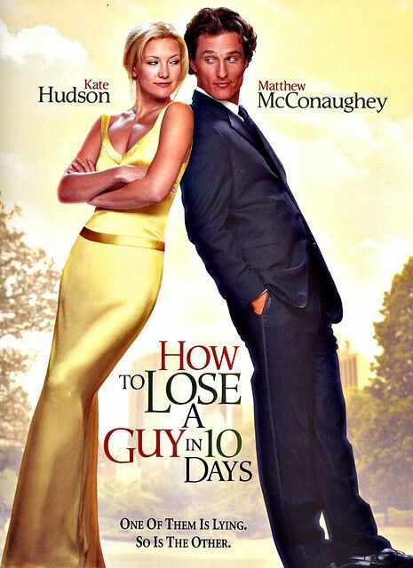

Movie Overview
How to Lose a Guy in 10 Days is a rom com that came out in 2003 and is one of my favorite movies of all time. The movie stars Kate Hudson as Andie Anderson and Matthew McConaughey as Ben Barry. Andie is a journalist for a women's magazine where she usually writes about beauty and lifestyle topics, but she really wants to cover more serious stories. She ends up getting an assignment to write about the mistakes women make that cause men to leave relationships. At the same time, Ben makes a bet with his coworkers that he can make any woman fall in love with him in just ten days. Of course, the two meet, and neither one knows what the other is up to. The movie is a perfect mix comedy and romance that is sure to be a favorite of yours too.


Plot Summary
The movie tells the story of Andie who purposely tries to ruin her relationship with Ben so she can write her article. She does everything you can think of to scare him off, like being way too clingy, decorating his apartment all girly without asking, and even bringing him a “love fern.” Even though she tries to make things unbearable, Ben sticks around because he wants to win his bet. The back-and-forth between them makes for some really funny scenes, especially when he’s clearly frustrated but won’t walk away. Over time, though, they start to enjoy each other’s company more than either of them expected especially after visiting Ben's family. What begins as a silly task slowly turns into something real, which is what gives the movie its heart. By the end, you'll be rooting for them even though they started out with totally opposite plans.